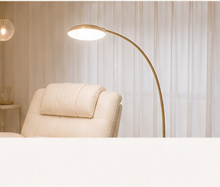

スタッフ紹介
一人ひとりの目元と向き合い、あなたの「なりたい」を丁寧に形にします。

Model Eyelist
azumi
小寺 あづみ
管理美容師 ／ アイラッシュ歴10年
10年アイラッシュ歴
100名以上月間担当客数
目元の美しさは、その人らしい魅力を引き出す大切なポイントだと考えています。丁寧なカウンセリングを通して、一人ひとりの理想や目元の特徴に寄り添い、持ちの良さと美しさを両立するデザインをご提案します。ナチュラルな仕上がりから、トレンド感のある束感デザインまで。毎日鏡を見るたびに、少し自信が持てるような目元づくりを心がけています。
得意デザイン
ナチュラルデザイン・束感デザイン・似合わせデザイン・まつげパーマ
得意なこと
丁寧なカウンセリング・目元診断・持続力を考えた施術
資格
管理美容師・各種施術資格の複数ディプロマ保有
Lucia の接客姿勢
寄り添うカウンセリング
お悩みやご要望を丁寧に伺い、理想の目元を一緒に作り上げます。初めての方も安心してご相談ください。
似合うをご提案
骨格・目の形・なりたい印象に合わせて、あなただけの"似合う"デザインをご提案します。
心地よい時間づくり
落ち着いた空間で、ゆったりと施術を受けていただけるよう、おもてなしを大切にしています。
あなたの理想の目元を、azumi が叶えます。
ご予約・ご相談はお気軽にどうぞ。